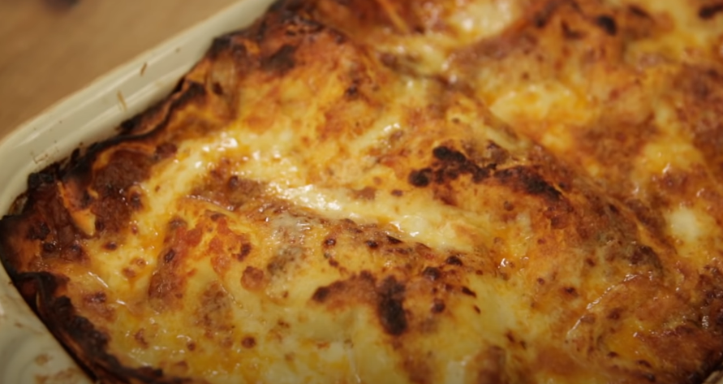

Lasagna

Description
A recipe for the whole family. A simple yet mouth-watering classic lasagna.
Ingredients
For 4 people
- 100 grams of unsalted butter
- 80 grams of flour
- 1 liter of milk
- Parmesan cheese
- Salt and pepper
- A quarter of a nutmeg
- Lasagna sheets
- Ragu (you can make it yourself or buy some)
- Mozzarella cheese
- Aluminium foil
Steps
Bechamel (White Sauce)
- Add your butter to a big pot at medium heat and let it melt.
- Throw the flour to the pot, stir it constantly to avoid lumps.
- Pour in the milk and 100 grams of grated parmesan cheese.
Don't stop stiring.
- Add a pinch of salt, a pinch of pepper and grated nutmeg.
- Swap to a whisk and whisk the mix for about 10 minutes on low heat.
Lasagna
- On a large rectangular recipient, start by adding a bit of Ragu
on the bottom layer.
- Add the first lasagna sheet, then add ragu, bechamel, mozzarella
and grated parmesan.
- Repeat for as many layers you want (or as many as the container
can fit!)
- Cover the recipient with aluminium foil and put it in
the oven at 180 degrees celsius for 35 to 45 minutes. Remove
the aluminium foil for the last 5 minutes. That's it!
Go back